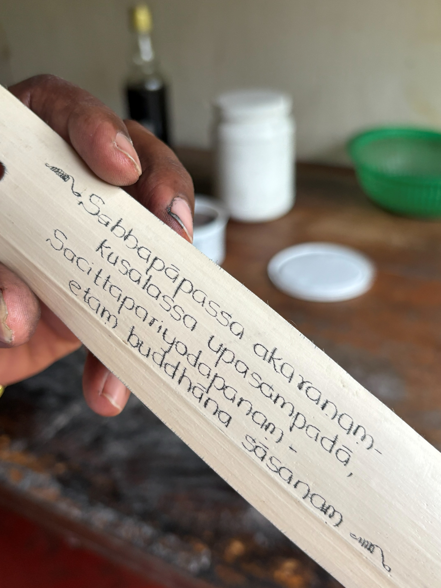
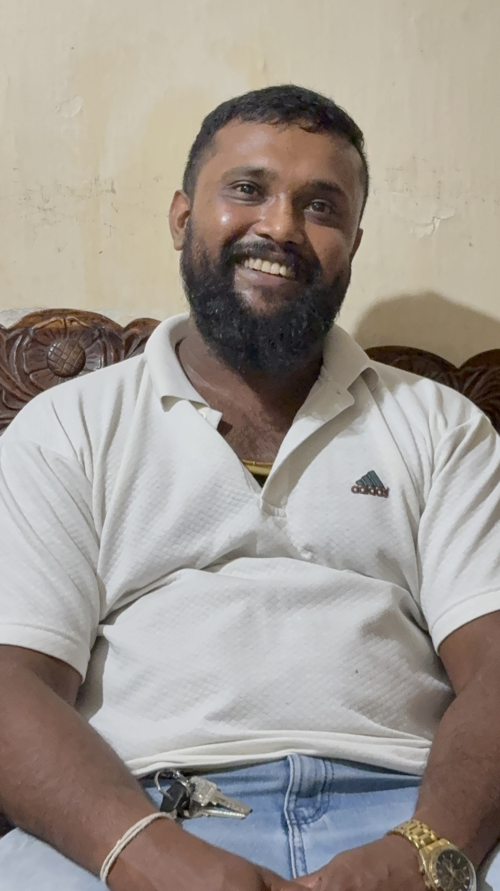
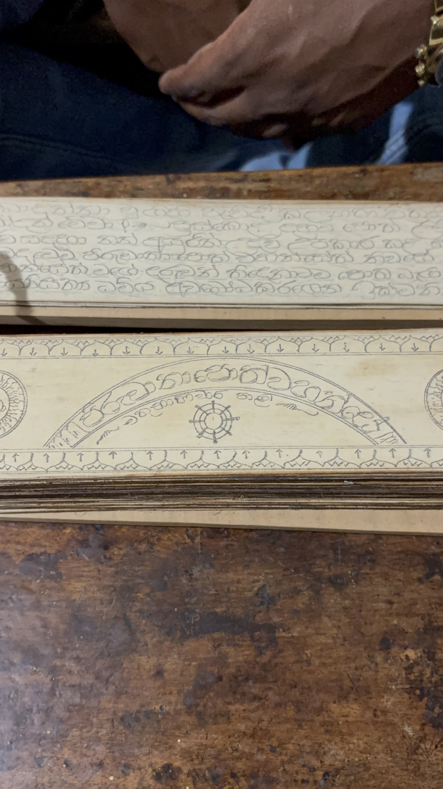
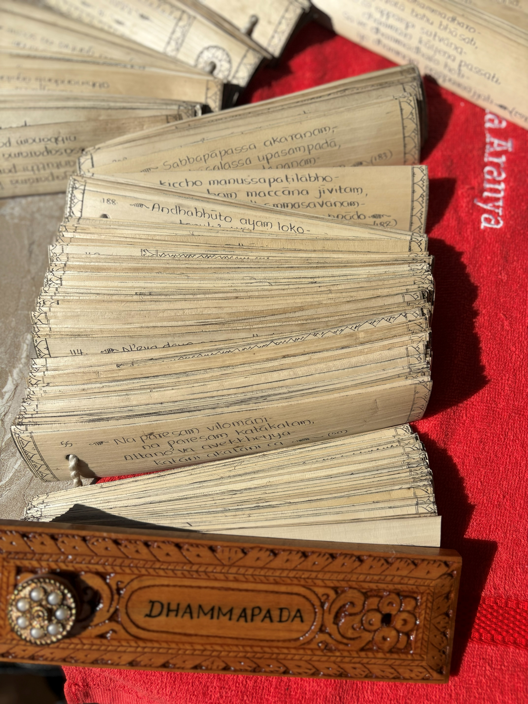
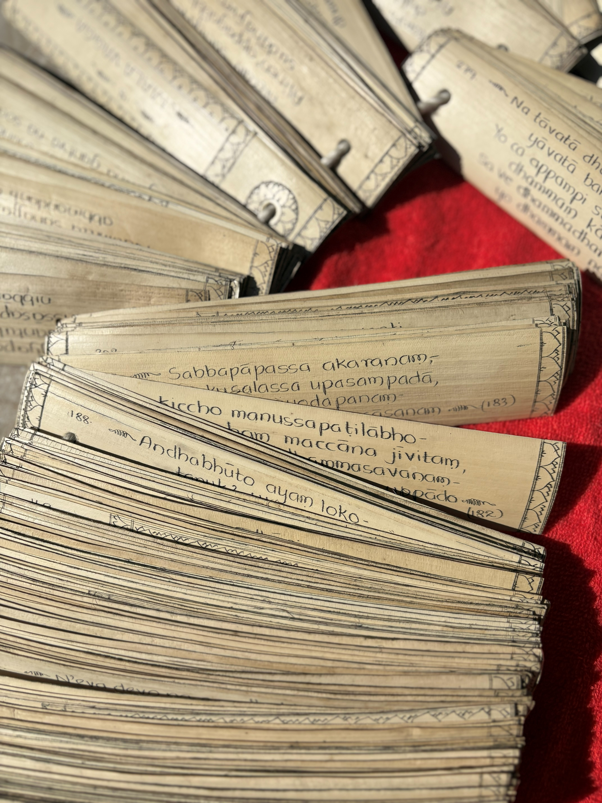

01
Preparing
The palm bud is cut, boiled with natural Ayurvedic ingredients, dried, flattened, trimmed and finished through nine careful steps.
See all nine stepsMatale · Sri Lanka
Buddhist texts written leaf by leaf by Sahampathi Herath, continuing a family tradition learned from his father in the historic hill country of Matale.


Meet the scribe
A craft learned from his father, carried by his family for generations, and chosen again after a successful career away from the workshop.
Sahampathi began practising as a young teenager. He later worked in a tea factory and received recognition as a best manager, yet family circumstances and the pull of tradition brought him back to Ola leaf work.
For him, the purpose is not simply to make an object. It is to help spread and preserve the Dhamma through a traditional form—one deliberate mark at a time.

History & living tradition
For centuries, palm leaves carried Buddhist scriptures as well as medicine, astronomy, poetry and everyday knowledge. In Matale, this history is especially close: Sri Lankan Buddhist tradition places the writing of the Pāli Canon at nearby Alu Vihara.
Sahampathi’s work belongs to that history, but it is not a museum reenactment. It is a family practice still being used to create new books.
Read the historyFrom leaf to book
Preparation takes the longest. Writing balances pressure and patience. Inking reveals the incisions, and binding turns separate leaves into a book made to endure.
The palm bud is cut, boiled with natural Ayurvedic ingredients, dried, flattened, trimmed and finished through nine careful steps.
See all nine stepsA bronze panhinda scratches each character into the leaf. It makes a groove rather than an ink mark.
Meet the panhindaA dark mixture settles into the incisions before the surface is cleaned and polished.
See the processThe leaves are aligned, drilled and gathered with cotton string between protective covers.
Binding and careSelected works
From short protective texts to the complete Dhammapada, each commission is shaped by its text, script, length and cover.

A substantial work shown opened across its many inscribed leaves, protected by a carved wooden cover.

Commission a book
Choose a text, script and cover, then speak directly with Sahampathi about the scale and time required.
Both short paritta texts and larger works can be discussed. Large books such as the Dhammapada require a deposit before work begins.